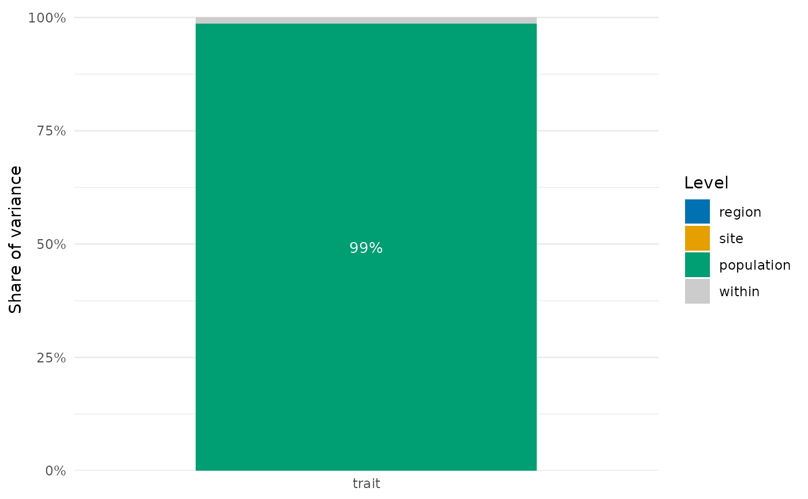

Variance components of traits across nested or crossed levels
Source:R/trait_variation.R
nested_variance.RdSplits the variance of each trait among levels, such as regions, sites, genera, species and
populations, with a linear mixed model of random intercepts fitted by restricted maximum
likelihood (Messier et al. 2010). The levels can form one nested hierarchy (factors) or
two hierarchies crossed with each other (factors and crossed), such as a spatial one
(region > site) and a taxonomic one (genus > species).
Arguments
- data
Data frame with the traits and the factors.
- traits
Names of the columns with trait values.
- factors
Names of the columns with the nested factors, from the broadest level to the finest.
- crossed
Names of the columns of a second hierarchy of nested factors, from the broadest level to the finest, crossed with
factors(for instancec("genus", "species")whenfactorsare spatial), orNULL(the default) for a single nested hierarchy.- interaction
With
crossed, whether to add a level for the combination of the finest level offactorsand the finest level ofcrossed(for instance the population, species by site). Without it, differences among populations of a species go towithin.
Value
A data frame with one row per level and one for the variance within the finest level
(within), and one column per trait with the share of variance of each level. The
attribute variance holds the variances, singular whether each fit was singular and
engine the package used. It has class nested_variance, with a
plot() method.
Details
Nested or crossed. In a nested design each level of a factor lies within a single level
of the factor before it, as sites within regions or individuals' populations within sites.
Species are rarely nested within sites: the same species occurs at several sites. Put after
site in factors, species then stands for each species at each site, that is, the
population, and its share mixes two things: how much species differ from one another and
how much populations of a species differ among sites. When species occur at several sites,
give the spatial levels in factors and the taxonomic ones in crossed. The model then has
a term for each level of both hierarchies and, by default, one for their interaction (the
finest spatial level by the finest taxonomic level, for instance site:species, the
population), which separates differences among species from differences among populations
of the same species. The variance left (within) is among individuals of a population.
A rule of thumb: if a column of factors has labels that recur under several levels of the
factors before it and these labels are the same units (the same species), the design is
crossed; if they are only reused names (site 1, 2, ... in each region), it is nested.
Checks. Within each hierarchy, a factor that does not split any group of the factors
before it (for instance species after populations, since each population holds a single
species) adds no level of variation, and the function stops, because the order of the
factors is then most likely reversed. A factor of factors whose labels recur under several
groups of the factors before it gets a warning that points to crossed.
Fitting. Nested models are fitted with nlme::lme(). Crossed models, and nested models
for which nlme::lme() fails to converge, are fitted with lme4::lmer(), which needs the
package lme4. When a level cannot be told apart from the others (for instance genera that
hold a single species at most sites), lme4::lmer() sets its variance to zero (a singular
fit) instead of failing; the function then warns, and the attribute singular says which
traits were affected. A zero share in a singular fit means that the data do not separate
that level, not that it does not vary. With few levels of a factor (two regions, say), the
variance of that factor is estimated with very few degrees of freedom and is very uncertain.
References
Messier, J., McGill, B. J., & Lechowicz, M. J. (2010). How do traits vary across ecological scales? A case for trait-based ecology. Ecology Letters, 13, 838–848. doi:10.1111/j.1461-0248.2010.01476.x
See also
Other trait variation among individuals:
community_index(),
drift_test(),
neighbour_metrics,
null_intervals(),
plot.mc_trait_gradient(),
plot.nested_variance(),
plot.trait_flex(),
plot.trait_rarefaction(),
plot.tstats(),
plot_population_traits(),
population_shifts(),
sample_individuals(),
subsample_individuals(),
trait_densities(),
trait_flex(),
trait_gradient(),
trait_gradient_bayes(),
trait_gradient_phylo(),
trait_gradient_test(),
trait_gradient_weights(),
trait_rarefaction(),
tstats(),
tstats_summary()
Examples
set.seed(1)
d <- data.frame(region = rep(c("north", "south"), each = 60),
site = rep(paste0("s", 1:6), each = 20),
species = sample(c("a", "b", "c"), 120, replace = TRUE))
d$population <- paste(d$site, d$species)
d$trait <- c(a = 10, b = 20, c = 30)[d$species] + rnorm(120)
res <- nested_variance(d, "trait", c("region", "site", "population"))
res
#> level trait
#> 1 region 1.741575e-08
#> 2 site 1.125857e-17
#> 3 population 9.862820e-01
#> 4 within 1.371800e-02
if (requireNamespace("ggplot2", quietly = TRUE)) plot(res)

# the same species at every site: species crossed with sites, and populations differ
d <- expand.grid(individual = 1:5, species = paste0("sp", 1:8), site = paste0("s", 1:12))
d$region <- ifelse(d$site %in% paste0("s", 1:6), "north", "south")
species_effect <- rnorm(8, 0, 3)
population_effect <- rnorm(8 * 12)
d$trait <- species_effect[d$species] +
population_effect[interaction(d$species, d$site)] + rnorm(nrow(d))
nested_variance(d, "trait", c("region", "site"), crossed = "species")
#> Warning: singular fit for `trait`: the variance of at least one level is estimated at zero because the data do not separate it from the others
#> level trait
#> 1 region 0.0000000
#> 2 site 0.0000000
#> 3 species 0.6959101
#> 4 site:species 0.1795086
#> 5 within 0.1245813